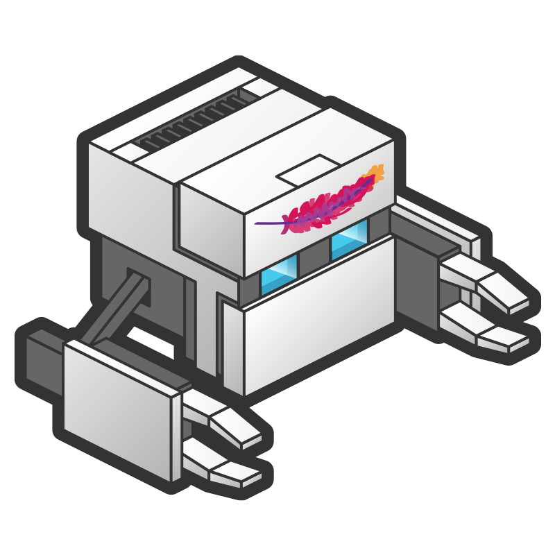

What's New in PhoneGap 2.0
PDX 2012
Fil Maj, Master Exploder, AdobeLong Way Since 1.0

Back in PDX after a year!
Apache Software Foundation
cordova.js
Shared JavaScript Across Platforms
New Platforms
WP7
Bada-WAC
Embedded WebView
Integrate PhoneGap into larger iOS and Android applications
Plugins
serious this time: http://github.com/alunny/cordova-plugin-spec
authoring is documented! wtf! http://docs.phonegap.com
CLI
every platform has create and debug commands!
$ cd cordova-ios
$ ./bin/create ~/apps/myIosCordovaApp ca.filmaj.cordovaios MyIosCordovaApp
$ cd ~/apps/myIosCordovaApp
$ ./cordova/debug
$ ./cordova/emulate
CLI, turned up to 11
WARNING: Incoming Live Demo
Thanks eh